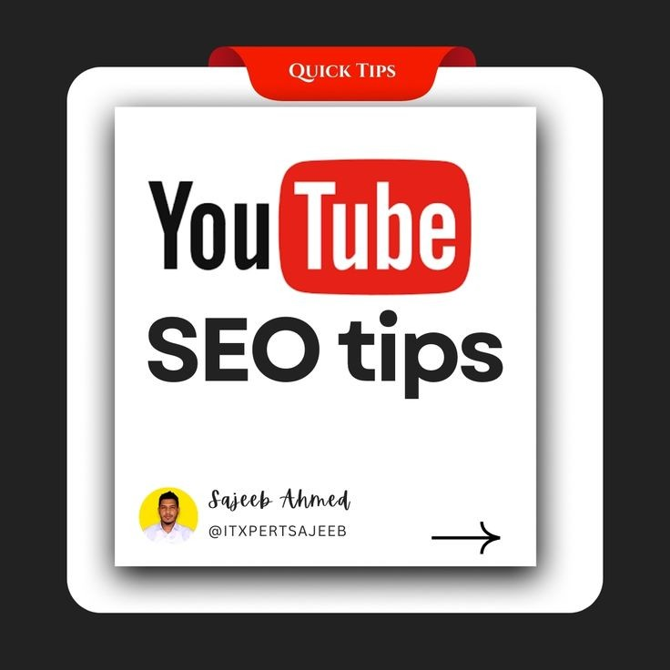

YouTube SEO: How to Rank Videos and Boost Views Like a Pro
Intro: Cracking the YouTube Algorithm
Ever wondered how some YouTubers get thousands of views in no time? Here’s the secret: YouTube SEO! It’s not complicated—just a few smart techniques. Whether you’re into vlogging, tutorials, or brand marketing, knowing YouTube SEO can skyrocket your growth. Stick with me, and you’ll learn how to optimize videos, increase engagement, and get ahead of the algorithm.
Why YouTube SEO Matters (And Why You Can’t Ignore It)
YouTube is the second-largest search engine globally, with over 2 billion active users monthly. With so much content out there, your video needs an extra push to stand out. This is where YouTube SEO comes in—it ensures your video ranks higher in search results and recommendations. Even popular creators like Nick Nimmin use SEO strategies to stay on top.
1. Keyword Research: Find Keywords with Low Difficulty but High Impact
Think of keywords like a treasure map—they guide your audience to your content. Use tools like Google Keyword Planner or Ubersuggest to find keywords with a difficulty score below 50%. Keywords like “YouTube SEO strategies” and “How to rank YouTube videos” are great options.
2. Title, Description, and Tags: Get the Basics Right
Your video title should include primary keywords. Make it short but catchy. Add secondary and semantic keywords naturally in your description. Don’t forget to use relevant tags—a mix of broad and specific ones helps your video appear in multiple searches.
3. Thumbnails and Engagement: Grab Attention

A good thumbnail attracts clicks. Make sure yours is bold and relevant. Engagement also matters—encourage viewers to comment and share. Even a simple question like, “What’s your favorite YouTube SEO tip?” can boost interaction and visibility.
4. Playlists and End Screens: Keep Viewers Watching
Playlists improve watch time, which is key to ranking. Group similar videos into playlists like "YouTube SEO Tips." Use end screens to suggest related videos and keep viewers engaged longer. Creators like Brian Dean use this strategy to maintain high watch times.
Conclusion: Putting It All Together
In short, mastering YouTube SEO is about working smart. Use targeted keywords, optimize your titles and descriptions, and encourage engagement. Consistency is key—keep optimizing, and your videos will gain more views and subscribers.
Have any SEO tips of your own? Drop them in the comments! I'd love to hear your thoughts.
Backlinks and Useful Resources:
- YouTube Creator Studio – Manage and track your video performance.
- TubeBuddy – A powerful tool for YouTube SEO analysis.
Read More >>>